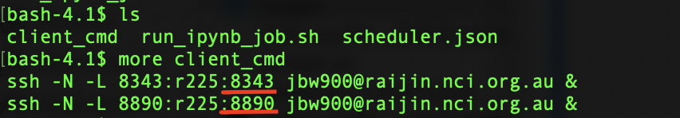
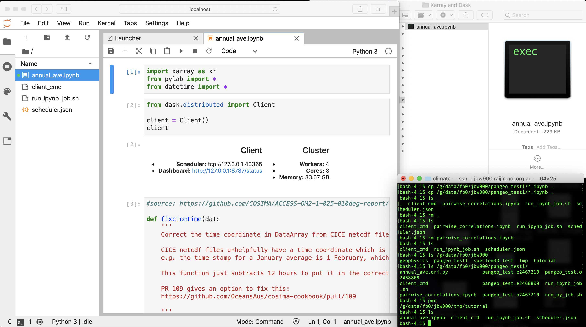

Setup Pangeo Environment¶
In this notebook:
- Load Pangeo module
- Activate pangeo enviornment
- Run a jupyter notebook
- Open the port at your local host to work on your notebook remotely
- Visulise job dashboard
Pangeo is a community platform for big data in geoscience, funded by US NSF. Pangeo project serves as a coordination point between scientists, software and computing infrastructure. The Pangeo software ecosystem involves open source tools such as xarray, iris, dask, jupyter, and many other packages. This site provides guidance for accessing data and performing analysis using these tools. NCI has installed the Pangeo environment on Raijin by following instructions here. Please note that Pangeo will be transferred to Gadi when major Raijin/Gadi transition happens in Nov/Dec. It will not be available on Raijin from transition period onwards. This notebook provides instructions on how to use the Pangeo environment to run your jupyter notebook locally and interact with Raijin remotely on Raijin.
Load Pangeo module from Raijin and activate Pangeo environment¶
$ module load pangeo/2019.10
$ source ${PANGEO_ROOT}/etc/profile.d/conda.sh
$ conda activate pangeo
You will see pangeo appear in the bracets in front of the promt sign. You can quit the enviornment using conda deactivate
$codna deactivate

If you ask where your Python command lives, it should direct you to where pangeo was installed on Raijin.

Configure Jupyter¶
Run the following two lines of command.
$ jupyter notebook --generate-config
$ jupyter notebook password
It will promote you to enter a password for opening jupyter notebook on your local machine later. You can simply type a password and you need to remember it!
If the command does not work (often in older versions of Jupyter), there are instructions on how to set up step-by-step.
Start a Jupyter Notebook Server¶
First create a directory where you will run the jupyter notebook, let’s call it /tutorial.
Let’s submit a job first to get it going. You can create a shell script by copying the following commands into a script file. Let’s name it as run_ipynb_job.sh. Or you can download the example script here. We request 2 notes with 32 CPU and 64GB memory in this instance. Further instructions about job submission and running jobs on Raijin can be found here.
You can modify your project name and project code as needed in the first two lines.
#!/bin/bash
#PBS -N pangeo_test
#PBS -P fp0
#PBS -q express
#PBS -l walltime=5:00:00
#PBS -l ncpus=32
#PBS -l mem=64GB
#PBS -l jobfs=100GB
module load pangeo/2019.10
pangeo.ini.all.sh
sleep infinity

Once the job is complete, there are two files appearing in your current directory.
- client_cmd
- scheduler.json

Note the port number underlined in the screenshot will be needed when interacting Raijin from your local computer later.
Launch the jupyterlab on your local computer¶
Open a termial in your local computer. Copy and past the content of the client_cmd in the command line. They are actually two commands login into Raijin from your local computer.

Open a web brower, type the following and enter. The jupyter notebook port number is 8343 in this example.
Don’t copy this number as it might be different in your case!
localhost:8343

Then it will prompt the password. Type the password that you set up in the second step in this tutorial.

Once your authentication passed, a jupyterlab interface will be launched in a few seconds.

Now you are ready to run your own notebooks.
IMPORTANT NOTES¶
Please make sure the following two lines are added at the beginning and the end of the notebook.
# start the dask client
client = Client(scheduler_file='scheduler.json')
# stop the pbs job.
! pangeo.end.sh
Let’s import a notebook example¶
You can drag and drop a notebook from your local computer into this Jupyterlab. Then the file will also appear in your working directory in Raijin.

The screen shot above shows
- left: jupyter notebook interface
- up right: local dir where a notebook is dragged and dropped into the Jupyterlab
- down right: Raijin command window showing the notebook appears instantly
View the DASK job dashboard¶
Open a new tab in the web browser, type the following, the second port in the client_cmd file. If the job starts running, you should be able to see the dynamic resources of the processing.
localhost:8890